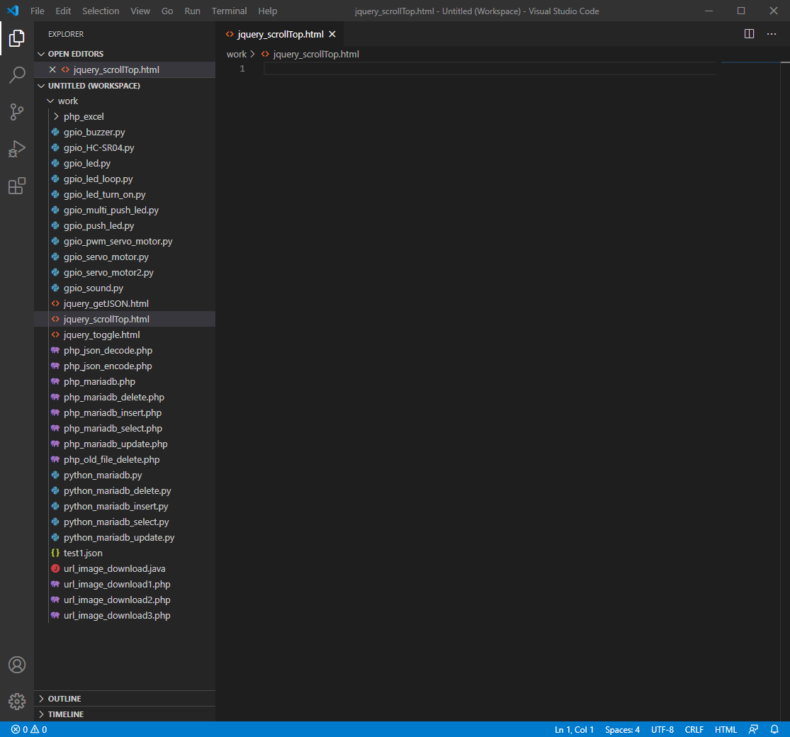
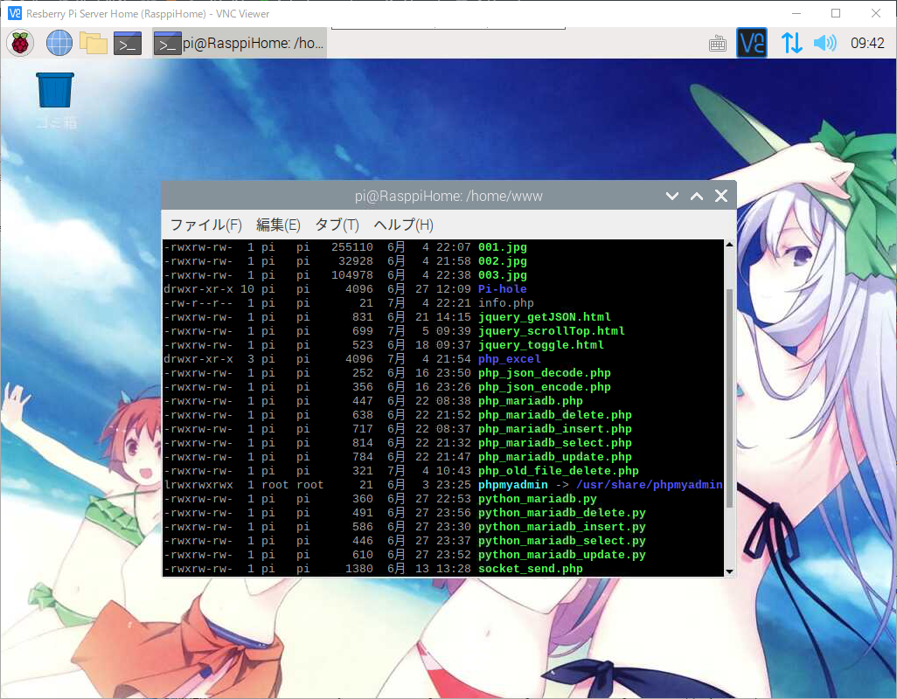
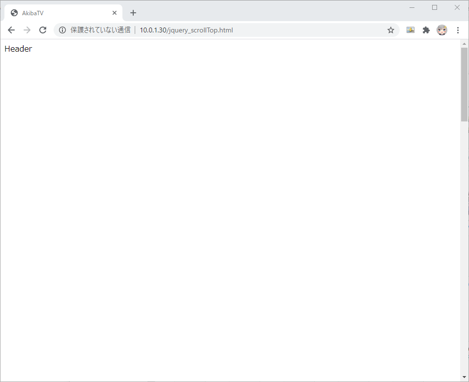
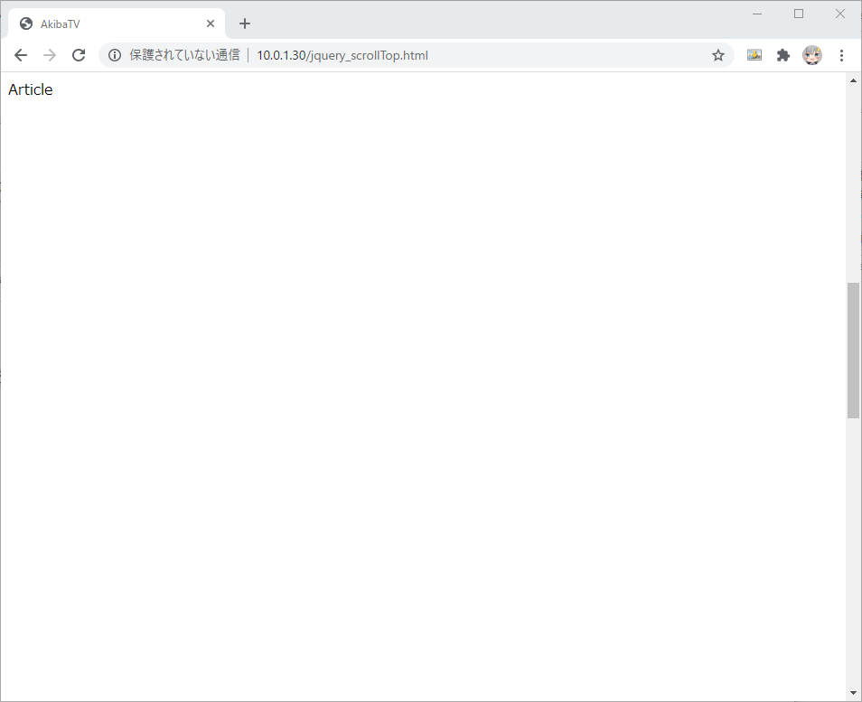
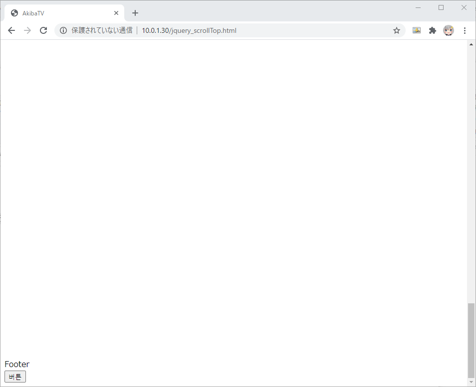

라즈베리파이 웹서버에서 jQuery ScrollToTop 사용하기
라즈베리파이 웹서버에서 jQuery ScrollToTop 사용하기
안녕하세요. AkibaTV입니다.
이번에 소개할 내용은 jQuery를 이용해서 만들어진 사이트를 보시다 보시면
스크롤을 한참 내리고서 왼쪽 또는 오른쪽에 Top으로 바로 올라갈수있는 버튼을 보신적이
있으실 겁니다. 어떻게 버튼을 눌러서 Top으로 한번에 다시 돌아가는 지에 대해서
jQuery의 API함수를 이용해 간단하게 구현을 해보도록 하겠습니다.
.scrollTop()이란
일치하는 요소 집합에서 첫 번째 요소에 대한 스크롤 막대의 현재 세로 위치를 가져 오거나
일치하는 모든 요소에 대한 스크롤 막대의 세로 위치를 설정하십시오.
그럼 어떻게 하는지 해보도록 하겠습니다.
Visual Studio Code(비주얼 스튜디오 코드)를 실행해 주시기 바랍니다.
실행을 하셨으면 파일명을 jquery_scrollTop.html로 추가를 해주시기 바랍니다.

아래의 코드를 작성해 주시기 바랍니다.
1 | <html> |
헤더를 1000px만큼 간격을 주시고 본문을 2000px만큼 간격을 줍니다.
마지막에 하단에서 버튼을 누르면 헤더가 있는 부분까지 부드럽게 스크롤이
올라가는 코딩을 해보았습니다.
실제로 제대로 동작을 하는지 확인을 해보도록 하겠습니다.
작성을 하신 소스파일을 라즈베리파이 웹서버 또는 개인서버, 호스팅서버에 업로드를 해주시기 바랍니다.
저는 라즈베리파이에 웹서버를 구축을 해두었기때문에 라즈베리파이 웹서버를 이용하도록 하겠습니다.

서버에 파일이 올라간것을 확인이 되셨으면 웹브라우저를 실행해 주세요.
웹브라우저의 URL에 http://각웹서버URL/jquery_scrollTop.html 를 실행해 주세요.

헤더부분

본문부분

하단부분과 버튼
버튼을 클릭하시면 자연스럽게 상단으로 스크롤되며 올라가는걸 확인 하실수 있습니다.